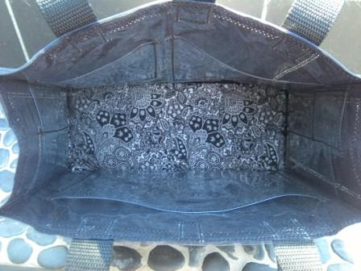
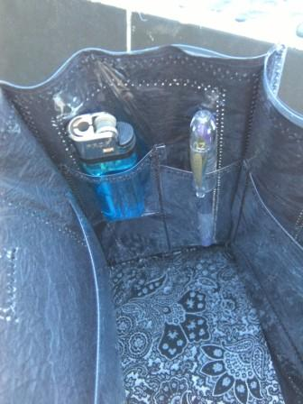
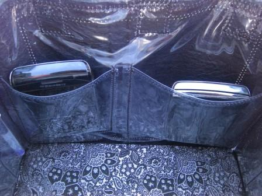
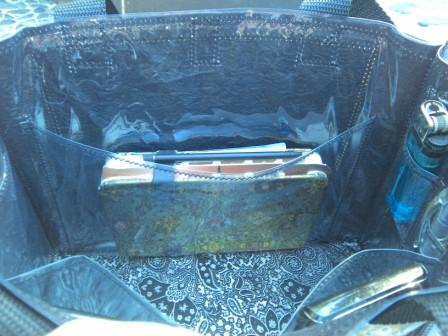
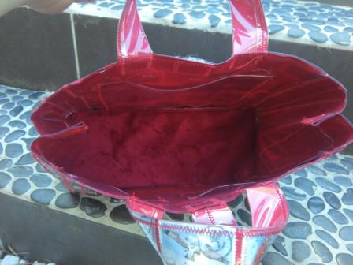
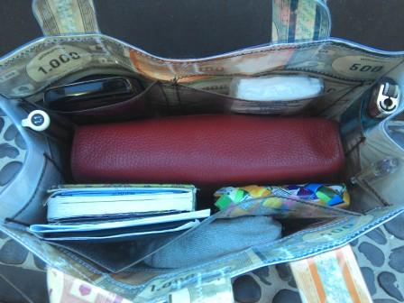

Quelques détails pour la fabrication.
Vous avez la possibilité de faire Votre sac à main sur mesure (la forme principale de base restant la même).
Pour cela me fournir les dimensions de :
- Hauteur, largeur, profondeur du sac
- Longeur petites anses ou grandes anses (port sur épaules)
- Couleur intérieur et extérieur (si besoin en fonction du modèle)
- Dimensions pochettes intérieures, sachant que sur tous mes nouveaux modèles, vous trouverez systématiquement 2 pochettes "portables", 1 grande poche "fourre-tout", et sur chaque côté 2 poches crayons et briquets (voir photos ci-dessous).
Intérieurs des sacs :


Pochettes à crayons et briquet ou rouge à lèvres....


Poches à portables X 2
Grande poche "fourre tout"
Possibilité de choisir la couleur de l'intérieur (selon modèle)


Matériaux utilisés : plastique, papiers, sangles, tissus...
Enfin le plus amusant, la création de votre modèle unique!
Contactez-moi, expliquez-moi votre sac à main...
Mettez la main dans VOTRE sac....